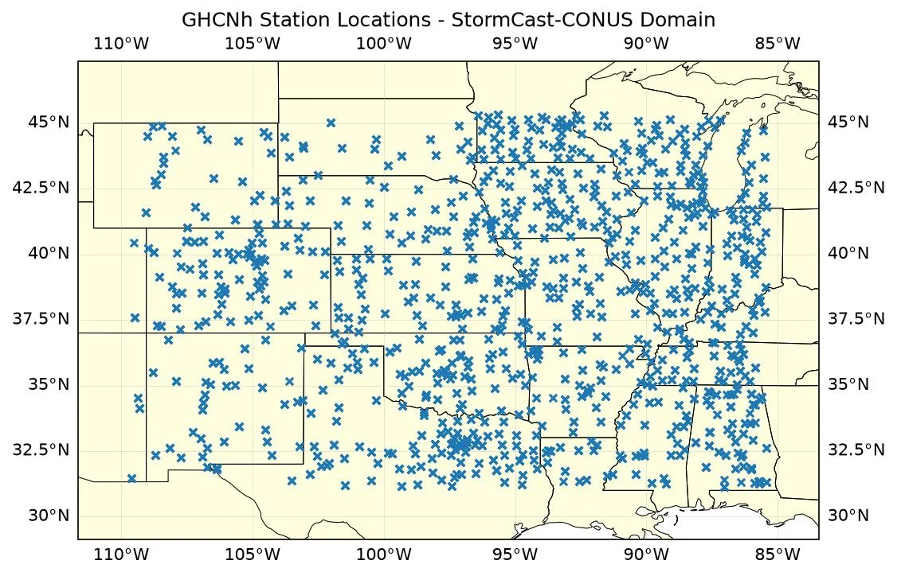
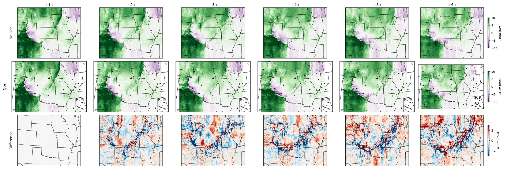
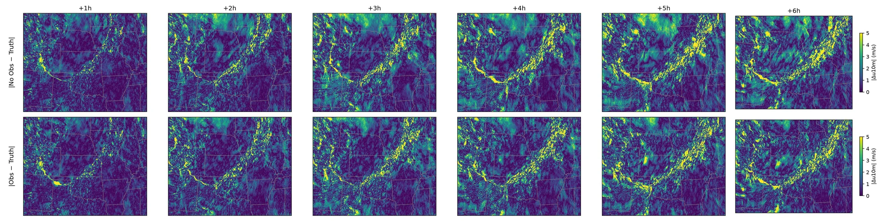

StormCast-CONUS Score-Based Data Assimilation¶
Running StormCast-CONUS with guided diffusion posterior sampling to assimilate observations.
This example demonstrates how to use the StormCast-CONUS generative model with score-based data assimilation (SDA) over the Continental United States. Sparse in-situ surface observations from NOAA Global Historical Climatology Network Hourly (GHCNh) are assimilated at each forecast step using diffusion posterior sampling (DPS) guidance. Two forecasts from the central United States are run to illustrate the impact of data assimilation: one without observations and one with GHCNh surface station data.
In this example you will learn:
- How to load StormCast-CONUS and configure SDA parameters
- Fetching HRRR initial conditions and GHCNh surface observations
- Running the model iteratively with and without observation assimilation
- Comparing assimilated and non-assimilated forecasts
Set Up¶
This example requires the following components:
- Prognostic Model: StormCast-CONUS
earth2studio.models.px.StormCastCONUSconfigured with SDA parameters. - Datasource (state): HRRR analysis
earth2studio.data.HRRR. - Datasource (obs): NOAA GHCNh surface stations
earth2studio.data.GHCNHourly.
StormCast-CONUS extends the StormCast generative architecture to the full CONUS HRRR domain at 3 km resolution. When an observation DataFrame is passed to each generator step, diffusion posterior sampling (DPS) steers the denoising trajectory toward the observed values.
import os
os.makedirs("outputs", exist_ok=True)
from dotenv import load_dotenv
load_dotenv() # TODO: make common example prep function
from datetime import timedelta
import numpy as np
import torch
from loguru import logger
from tqdm import tqdm
logger.remove()
logger.add(lambda msg: tqdm.write(msg, end=""), colorize=True)
from earth2studio.data import HRRR, GHCNHourly, fetch_data
from earth2studio.models.px import StormCastCONUS
from earth2studio.utils.coords import map_coords
# Load the default model package
package = StormCastCONUS.load_default_package()
# Configure SDA: sda_std_obs is the assumed normalised observation noise std per
# variable (lower = trust observations more).
# sda_gamma is the DPS step-size scaling (lower = stronger guidance from obs).
#
# By default the example runs on the central-US subdomain to reduce GPU memory
# requirements. For the full CONUS domain, comment out hrrr_lat_lim and
# hrrr_lon_lim below (requires ~200 GB VRAM for SDA).
hrrr_lat_lim = (273, 785)
hrrr_lon_lim = (579, 1219)
model = StormCastCONUS.load_model(
package,
hrrr_lat_lim=hrrr_lat_lim, # comment out for full CONUS domain
hrrr_lon_lim=hrrr_lon_lim, # comment out for full CONUS domain
num_diffusion_steps=18,
num_sda_diffusion_steps=96,
sda_std_obs=0.15,
sda_gamma=1e-3,
)
model = model.to("cuda:0")
hrrr = HRRR()
Console output9 lines
/__w/earth2studio/earth2studio/.venv/lib/python3.13/site-packages/torch/cuda/__init__.py:64: FutureWarning: The pynvml package is deprecated. Please install nvidia-ml-py instead. If you did not install pynvml directly, please report this to the maintainers of the package that installed pynvml for you.
import pynvml # type: ignore[import]
WARNING[XFORMERS]: xFormers can't load C++/CUDA extensions. xFormers was built for:
PyTorch 2.10.0+cu128 with CUDA 1208 (you have 2.13.0+cu130)
Python 3.10.19 (you have 3.13.13)
Please reinstall xformers (see https://github.com/facebookresearch/xformers#installing-xformers)
Memory-efficient attention, SwiGLU, sparse and more won't be available.
Set XFORMERS_MORE_DETAILS=1 for more details
CuPy distance computation test failed with error: cuVS >= 24.12 or pylibraft < 24.12 should be installed to use this featureFetch Initial Conditions¶
Pull HRRR analysis data for 17 April 2026, a date that saw a significant tornado outbreak across the central United States, and align it to the model's coordinate system.
init_time = np.array([np.datetime64("2026-04-17T18:00")])
x, coords = fetch_data(
hrrr,
time=init_time,
variable=model.variables,
lead_time=np.array([np.timedelta64(0, "h")]),
device="cuda:0",
)
x, coords = map_coords(x, coords, model.input_coords())
Console output4 lines
Fetching HRRR data: 0%| | 0/99 [00:00<?, ?it/s]
Fetching HRRR data: 1%| | 1/99 [00:05<09:42, 5.94s/it]
Fetching HRRR data: 57%|█████▋ | 56/99 [00:06<00:03, 12.61it/s]
Fetching HRRR data: 100%|██████████| 99/99 [00:06<00:00, 15.86it/s]Run Without Observations¶
Step the model forward 6 hours without any observations. This uses the
standard EDM diffusion sampler, equivalent to running StormCast-CONUS as a
pure generative forecast model. We store only the 10-m zonal wind (u10m)
used for comparison.
nsteps = 6
plot_var = "u10m"
plot_vars = ["u10m", "v10m", "t2m"]
var_idx = list(model.variables).index(plot_var)
np.random.seed(42)
torch.manual_seed(42)
if torch.cuda.is_available():
torch.cuda.manual_seed_all(42)
no_obs_fields = []
gen = model.create_generator(x.clone(), coords.copy())
x_cur, c_cur = next(gen) # prime the generator, yields initial state (lead_time = 0 h)
for step in tqdm(range(nsteps), desc="No-obs forecast"):
logger.info(f"Running no-obs forecast step {step + 1}/{nsteps}")
x_cur, c_cur = gen.send(None) # advance one hour without observations
no_obs_fields.append(x_cur[0, 0, var_idx].cpu().numpy())
gen.close()
no_obs_fields = np.stack(no_obs_fields) # (nsteps, H, W)
Console output68 lines
No-obs forecast: 0%| | 0/6 [00:00<?, ?it/s]
2026-08-18 22:53:26.224 | INFO | __main__:<module>:16 - Running no-obs forecast step 1/6
No-obs forecast: 0%| | 0/6 [00:00<?, ?it/s]
Fetching GFS data: 0%| | 0/26 [00:00<?, ?it/s]
Fetching GFS data: 4%|▍ | 1/26 [00:00<00:24, 1.04it/s]
Fetching GFS data: 100%|██████████| 26/26 [00:00<00:00, 26.67it/s]
No-obs forecast: 17%|█▋ | 1/6 [00:04<00:24, 4.81s/it]
2026-08-18 22:53:31.038 | INFO | __main__:<module>:16 - Running no-obs forecast step 2/6
No-obs forecast: 17%|█▋ | 1/6 [00:04<00:24, 4.81s/it]
Fetching GFS data: 0%| | 0/26 [00:00<?, ?it/s]
Fetching GFS data: 4%|▍ | 1/26 [00:00<00:21, 1.17it/s]
Fetching GFS data: 100%|██████████| 26/26 [00:00<00:00, 30.16it/s]
No-obs forecast: 33%|███▎ | 2/6 [00:09<00:18, 4.62s/it]
2026-08-18 22:53:35.522 | INFO | __main__:<module>:16 - Running no-obs forecast step 3/6
No-obs forecast: 33%|███▎ | 2/6 [00:09<00:18, 4.62s/it]
Fetching GFS data: 0%| | 0/26 [00:00<?, ?it/s]
Fetching GFS data: 4%|▍ | 1/26 [00:00<00:18, 1.33it/s]
Fetching GFS data: 100%|██████████| 26/26 [00:00<00:00, 34.16it/s]
No-obs forecast: 50%|█████ | 3/6 [00:13<00:13, 4.51s/it]
2026-08-18 22:53:39.905 | INFO | __main__:<module>:16 - Running no-obs forecast step 4/6
No-obs forecast: 50%|█████ | 3/6 [00:13<00:13, 4.51s/it]
Fetching GFS data: 0%| | 0/26 [00:00<?, ?it/s]
Fetching GFS data: 4%|▍ | 1/26 [00:00<00:18, 1.32it/s]
Fetching GFS data: 100%|██████████| 26/26 [00:00<00:00, 33.97it/s]
No-obs forecast: 67%|██████▋ | 4/6 [00:18<00:08, 4.47s/it]
2026-08-18 22:53:44.314 | INFO | __main__:<module>:16 - Running no-obs forecast step 5/6
No-obs forecast: 67%|██████▋ | 4/6 [00:18<00:08, 4.47s/it]
Fetching GFS data: 0%| | 0/26 [00:00<?, ?it/s]
Fetching GFS data: 4%|▍ | 1/26 [00:00<00:20, 1.19it/s]
Fetching GFS data: 100%|██████████| 26/26 [00:00<00:00, 30.74it/s]
No-obs forecast: 83%|████████▎ | 5/6 [00:22<00:04, 4.48s/it]
2026-08-18 22:53:48.801 | INFO | __main__:<module>:16 - Running no-obs forecast step 6/6
No-obs forecast: 83%|████████▎ | 5/6 [00:22<00:04, 4.48s/it]
Fetching GFS data: 0%| | 0/26 [00:00<?, ?it/s]
Fetching GFS data: 4%|▍ | 1/26 [00:00<00:17, 1.44it/s]
Fetching GFS data: 100%|██████████| 26/26 [00:00<00:00, 36.86it/s]
No-obs forecast: 100%|██████████| 6/6 [00:26<00:00, 4.43s/it]
No-obs forecast: 100%|██████████| 6/6 [00:26<00:00, 4.49s/it]Fetch Observations and Plot Station Locations¶
Fetch GHCNh surface observations covering the model domain. The bounding box is derived from the model's lat/lon grid so it automatically adjusts when running on a subdomain. We visualise the station network before running the assimilation forecast.
# Model lon is in [0, 360); convert to [-180, 180) for the western-hemisphere
# CONUS domain. GHCNHourly.get_stations_bbox accepts either convention.
lat_min = float(model.lat.min())
lat_max = float(model.lat.max())
lon_min = float(model.lon.min()) - 360.0
lon_max = float(model.lon.max()) - 360.0
stations = GHCNHourly.get_stations_bbox((lat_min, lon_min, lat_max, lon_max))
ghcn = GHCNHourly(
stations=stations, time_tolerance=timedelta(minutes=15), verbose=False
)
import cartopy
import cartopy.crs as ccrs
import matplotlib.pyplot as plt
# Fetch a sample observation at the initial time to retrieve station positions.
# GHCNh returns lon in [0, 360); shift to [-180, 180) for PlateCarree plots.
sample_df = ghcn(init_time, plot_vars)
station_lats = sample_df["lat"].values
station_lons = sample_df["lon"].values - 360.0
plt.close("all")
fig, ax = plt.subplots(subplot_kw={"projection": ccrs.PlateCarree()}, figsize=(8, 6))
ax.set_extent(
[lon_min - 2, lon_max + 2, lat_min - 2, lat_max + 2], crs=ccrs.PlateCarree()
)
ax.add_feature(
cartopy.feature.STATES.with_scale("50m"), linewidth=0.5, edgecolor="black"
)
ax.add_feature(cartopy.feature.LAND, facecolor="lightyellow")
ax.gridlines(draw_labels=True, linewidth=0.3, alpha=0.5)
ax.scatter(
station_lons,
station_lats,
s=20,
marker="x",
transform=ccrs.PlateCarree(),
zorder=3,
)
ax.set_title("GHCNh Station Locations - StormCast-CONUS Domain")
plt.savefig("outputs/01_ghcn_stations.jpg", dpi=150, bbox_inches="tight")

Run Inference With Streaming Observations¶
At each forecast step the next valid time is determined from the current generator state, GHCNh observations are fetched for that time, and the observation DataFrame is sent to the generator. Zero-value wind reports (likely anemometer failure) are filtered out before assimilation.
np.random.seed(42)
torch.manual_seed(42)
if torch.cuda.is_available():
torch.cuda.manual_seed_all(42)
obs_fields = []
gen = model.create_generator(x.clone(), coords.copy())
x_cur, c_cur = next(gen) # prime the generator, yields initial state
for step in tqdm(range(nsteps), desc="Obs forecast"):
# Target valid time is one step ahead of the current generator state
valid_time = np.array(
[c_cur["time"][0] + c_cur["lead_time"][0] + np.timedelta64(1, "h")]
)
obs_df = ghcn(valid_time, plot_vars)
# Drop zero-value wind reports (common anemometer failure mode)
if len(obs_df) > 0:
is_wind = obs_df["variable"].str.startswith(("u", "v"))
zero_wind = is_wind & (obs_df["observation"].abs() < 1e-5)
obs_df = obs_df[~zero_wind]
obs = obs_df if len(obs_df) > 0 else None
logger.info(
f"Step {step + 1}/{nsteps} — {len(obs_df) if obs is not None else 0} obs"
)
x_cur, c_cur = gen.send(obs) # advance one hour with observations
obs_fields.append(x_cur[0, 0, var_idx].cpu().numpy())
gen.close()
obs_fields = np.stack(obs_fields) # (nsteps, H, W)
Console output68 lines
Obs forecast: 0%| | 0/6 [00:00<?, ?it/s]
2026-08-18 22:56:08.722 | INFO | __main__:<module>:24 - Step 1/6 — 3281 obs
Obs forecast: 0%| | 0/6 [00:25<?, ?it/s]
Fetching GFS data: 0%| | 0/26 [00:00<?, ?it/s]
Fetching GFS data: 4%|▍ | 1/26 [00:00<00:21, 1.16it/s]
Fetching GFS data: 100%|██████████| 26/26 [00:00<00:00, 29.61it/s]
Obs forecast: 17%|█▋ | 1/6 [01:15<06:16, 75.37s/it]
2026-08-18 22:57:23.708 | INFO | __main__:<module>:24 - Step 2/6 — 3293 obs
Obs forecast: 17%|█▋ | 1/6 [01:40<06:16, 75.37s/it]
Fetching GFS data: 0%| | 0/26 [00:00<?, ?it/s]
Fetching GFS data: 4%|▍ | 1/26 [00:00<00:19, 1.28it/s]
Fetching GFS data: 100%|██████████| 26/26 [00:00<00:00, 31.90it/s]
Obs forecast: 33%|███▎ | 2/6 [02:23<04:44, 71.04s/it]
2026-08-18 22:58:33.058 | INFO | __main__:<module>:24 - Step 3/6 — 3191 obs
Obs forecast: 33%|███▎ | 2/6 [02:49<04:44, 71.04s/it]
Fetching GFS data: 0%| | 0/26 [00:00<?, ?it/s]
Fetching GFS data: 4%|▍ | 1/26 [00:00<00:16, 1.54it/s]
Fetching GFS data: 100%|██████████| 26/26 [00:00<00:00, 40.00it/s]
Obs forecast: 50%|█████ | 3/6 [03:32<03:30, 70.24s/it]
2026-08-18 22:59:40.741 | INFO | __main__:<module>:24 - Step 4/6 — 3288 obs
Obs forecast: 50%|█████ | 3/6 [03:57<03:30, 70.24s/it]
Fetching GFS data: 0%| | 0/26 [00:00<?, ?it/s]
Fetching GFS data: 4%|▍ | 1/26 [00:00<00:17, 1.44it/s]
Fetching GFS data: 100%|██████████| 26/26 [00:00<00:00, 36.96it/s]
Obs forecast: 67%|██████▋ | 4/6 [04:40<02:18, 69.30s/it]
2026-08-18 23:00:49.212 | INFO | __main__:<module>:24 - Step 5/6 — 3342 obs
Obs forecast: 67%|██████▋ | 4/6 [05:05<02:18, 69.30s/it]
Fetching GFS data: 0%| | 0/26 [00:00<?, ?it/s]
Fetching GFS data: 4%|▍ | 1/26 [00:00<00:19, 1.31it/s]
Fetching GFS data: 100%|██████████| 26/26 [00:00<00:00, 33.64it/s]
Obs forecast: 83%|████████▎ | 5/6 [05:49<01:09, 69.08s/it]
2026-08-18 23:01:57.175 | INFO | __main__:<module>:24 - Step 6/6 — 3104 obs
Obs forecast: 83%|████████▎ | 5/6 [06:13<01:09, 69.08s/it]
Fetching GFS data: 0%| | 0/26 [00:00<?, ?it/s]
Fetching GFS data: 4%|▍ | 1/26 [00:00<00:19, 1.29it/s]
Fetching GFS data: 100%|██████████| 26/26 [00:00<00:00, 33.13it/s]
Obs forecast: 100%|██████████| 6/6 [06:57<00:00, 68.65s/it]
Obs forecast: 100%|██████████| 6/6 [06:57<00:00, 69.51s/it]Post Processing¶
Compare the two forecasts. The top row shows the baseline (no observations), the middle row shows the assimilation forecast with station locations overlaid, and the bottom row shows the signed difference (assimilated − baseline).
plt.close("all")
# HRRR Lambert Conformal projection
projection = ccrs.LambertConformal(
central_longitude=262.5,
central_latitude=38.5,
standard_parallels=(38.5, 38.5),
globe=ccrs.Globe(semimajor_axis=6371229, semiminor_axis=6371229),
)
fig, axes = plt.subplots(
3,
nsteps,
subplot_kw={"projection": projection},
figsize=(4 * nsteps, 8),
)
fig.subplots_adjust(wspace=0.02, hspace=0.08, left=0.1, right=0.9)
vmin, vmax = -10, 10
for step in range(nsteps):
lead_hr = step + 1
no_obs_field = no_obs_fields[step]
obs_field = obs_fields[step]
diff_field = obs_field - no_obs_field
# Row 0: No-obs forecast
ax = axes[0, step]
im0 = ax.pcolormesh(
model.lon,
model.lat,
no_obs_field,
transform=ccrs.PlateCarree(),
cmap="PRGn",
vmin=vmin,
vmax=vmax,
)
ax.add_feature(
cartopy.feature.STATES.with_scale("50m"),
linewidth=0.5,
edgecolor="black",
zorder=2,
)
ax.set_title(f"+{lead_hr}h")
# Row 1: With-obs forecast + station locations
ax = axes[1, step]
im1 = ax.pcolormesh(
model.lon,
model.lat,
obs_field,
transform=ccrs.PlateCarree(),
cmap="PRGn",
vmin=vmin,
vmax=vmax,
)
ax.scatter(
station_lons,
station_lats,
s=8,
facecolors="none",
edgecolors="black",
linewidths=0.8,
transform=ccrs.PlateCarree(),
zorder=3,
)
ax.add_feature(
cartopy.feature.STATES.with_scale("50m"),
linewidth=0.5,
edgecolor="black",
zorder=2,
)
# Row 2: Difference (assimilated − baseline)
ax = axes[2, step]
im2 = ax.pcolormesh(
model.lon,
model.lat,
diff_field,
transform=ccrs.PlateCarree(),
cmap="RdBu_r",
vmin=-3,
vmax=3,
)
ax.add_feature(
cartopy.feature.STATES.with_scale("50m"),
linewidth=0.5,
edgecolor="black",
zorder=2,
)
for row_label, ax_row in zip(["No Obs", "Obs", "Difference"], axes[:, 0]):
ax_row.text(
-0.07,
0.5,
row_label,
va="bottom",
ha="center",
rotation="vertical",
rotation_mode="anchor",
fontsize=12,
transform=ax_row.transAxes,
)
plt.colorbar(im0, ax=axes[0, -1], shrink=0.6, label=f"{plot_var} (m/s)")
plt.colorbar(im1, ax=axes[1, -1], shrink=0.6, label=f"{plot_var} (m/s)")
plt.colorbar(im2, ax=axes[2, -1], shrink=0.6, label=f"{plot_var} (m/s)")
plt.tight_layout()
plt.savefig("outputs/01_stormcast_conus_sda_comparison.jpg", dpi=150)

Ground Truth Comparison¶
Fetch HRRR analysis at each valid forecast time and compute the absolute error of both the no-obs and assimilation forecasts. This shows whether assimilation improves accuracy relative to the actual analysis.
truth_x, truth_coords = fetch_data(
hrrr,
time=init_time,
variable=np.array([plot_var]),
lead_time=np.array([np.timedelta64(h + 1, "h") for h in range(nsteps)]),
device="cpu",
)
truth_x, truth_coords = map_coords(
truth_x,
truth_coords,
{"hrrr_y": model.hrrr_y, "hrrr_x": model.hrrr_x},
)
# truth_x shape: (time=1, lead_time=nsteps, variable=1, H, W)
truth_fields = truth_x[0, :, 0].numpy() # (nsteps, H, W)
no_obs_err = np.abs(no_obs_fields - truth_fields)
obs_err = np.abs(obs_fields - truth_fields)
Console output17 lines
Fetching HRRR data: 0%| | 0/1 [00:00<?, ?it/s]
Fetching HRRR data: 100%|██████████| 1/1 [00:00<00:00, 37.76it/s]
Fetching HRRR data: 0%| | 0/1 [00:00<?, ?it/s]
Fetching HRRR data: 100%|██████████| 1/1 [00:00<00:00, 37.67it/s]
Fetching HRRR data: 0%| | 0/1 [00:00<?, ?it/s]
Fetching HRRR data: 100%|██████████| 1/1 [00:00<00:00, 26.21it/s]
Fetching HRRR data: 0%| | 0/1 [00:00<?, ?it/s]
Fetching HRRR data: 100%|██████████| 1/1 [00:00<00:00, 20.55it/s]
Fetching HRRR data: 0%| | 0/1 [00:00<?, ?it/s]
Fetching HRRR data: 100%|██████████| 1/1 [00:00<00:00, 38.12it/s]
Fetching HRRR data: 0%| | 0/1 [00:00<?, ?it/s]
Fetching HRRR data: 100%|██████████| 1/1 [00:00<00:00, 75.52it/s]Plot absolute errors between the StormCast-CONUS predictions and HRRR analysis ground truth. In later time-steps the assimilated forecast typically shows lower errors near the observation stations.
plt.close("all")
fig, axes = plt.subplots(
2,
nsteps,
subplot_kw={"projection": projection},
figsize=(4 * nsteps, 6),
)
fig.subplots_adjust(wspace=0.02, hspace=0.08, left=0.1, right=0.9)
err_max = 5
for step in range(nsteps):
lead_hr = step + 1
# Row 0: No-obs absolute error
ax = axes[0, step]
im0 = ax.pcolormesh(
model.lon,
model.lat,
no_obs_err[step],
transform=ccrs.PlateCarree(),
cmap="viridis",
vmin=0,
vmax=err_max,
)
ax.add_feature(
cartopy.feature.STATES.with_scale("50m"),
linewidth=0.5,
edgecolor="grey",
zorder=2,
)
ax.set_title(f"+{lead_hr}h")
# Row 1: Obs absolute error
ax = axes[1, step]
im1 = ax.pcolormesh(
model.lon,
model.lat,
obs_err[step],
transform=ccrs.PlateCarree(),
cmap="viridis",
vmin=0,
vmax=err_max,
)
ax.add_feature(
cartopy.feature.STATES.with_scale("50m"),
linewidth=0.5,
edgecolor="grey",
zorder=2,
)
for row_label, ax_row in zip(["|No Obs − Truth|", "|Obs − Truth|"], axes[:, 0]):
ax_row.text(
-0.07,
0.5,
row_label,
va="bottom",
ha="center",
rotation="vertical",
rotation_mode="anchor",
fontsize=12,
transform=ax_row.transAxes,
)
plt.colorbar(im0, ax=axes[0, -1], shrink=0.6, label=f"|Δ{plot_var}| (m/s)")
plt.colorbar(im1, ax=axes[1, -1], shrink=0.6, label=f"|Δ{plot_var}| (m/s)")
plt.tight_layout()
plt.savefig("outputs/01_stormcast_conus_sda_gt_comparison.jpg", dpi=150)
